Analysis of ICSID tribunals in claims against Argentina
Source:vignettes/articles/argentina-tribunals.Rmd
argentina-tribunals.RmdOf the 742 cases of the International Centre for Settlement of
Investment Disputes (ICSID) in the icsid_tribunals data, 47
were brought against the Argentine Republic, the largest number against
any state. Each case is heard by a tribunal of three arbitrators, and
the tribunals of the claims against one state form a temporal
hypergraph. Its nodes are the arbitrators, its hyperedges the tribunals,
and each hyperedge is active from the constitution of the tribunal to
the conclusion of its case. A hypergraph keeps the tribunal as a unit,
where a network of pairs of arbitrators dissolves it into three ties,
and its temporal form keeps apart tribunals that never sat at the same
time. This document asks three questions of the tribunals in the claims
against Argentina. The first is who decided the claims, and how
concentrated the seats were. The second is whether the same panels sat
again more often than the numbers of tribunals of the arbitrators imply.
The third is how the structure of the docket changed over two decades,
and which tribunals connected it at each time. The tribunals are
analysed over time and compared with the other ICSID cases.
Data
The cases against Argentina are the rows of
icsid_tribunals with Argentina as the respondent, one row
per seat on a tribunal.
argentina <- subset(icsid_tribunals, respondent == "Argentine Republic")The 47 cases were heard by 77 arbitrators. Their tribunals were constituted between 1997 and 2020, 26 of them before 2006 and 19 in 2003 and 2004 alone. 6 cases are marked as pending on 15 June 2023, the end of observation. One of these, ARB/14/32, also carries a conclusion date, 5 November 2021, and its tribunal is treated as concluded on that date.
The temporal hypergraph
The tribunals are built in the interval format. A case without a
conclusion date is active until observation_end, and the
columns that are constant within a case, such as the economic sector,
are kept as attributes of the hyperedge. The same construction on all
ICSID tribunals, and on the tribunals of the cases against other states,
gives the systems the claims against Argentina are compared with.
tribunals <- temporal_hypergraph(argentina, node = "arbitrator",
hyperedge = "case", start = "constituted",
end = "concluded",
observation_end = as.Date("2023-06-15"))
summary(tribunals)
#> n_nodes n_hyperedges n_event_times first_time last_time n_memberships
#> 1 77 47 82 0 9018 141
#> mean_edge_size median_edge_size mean_duration format time_unit
#> 1 3 3 2449.143 interval days
all_tribunals <- temporal_hypergraph(icsid_tribunals, node = "arbitrator",
hyperedge = "case", start = "constituted",
end = "concluded",
observation_end = as.Date("2023-06-15"))
others <- subset(icsid_tribunals, respondent != "Argentine Republic")
other_tribunals <- temporal_hypergraph(others, node = "arbitrator",
hyperedge = "case", start = "constituted",
end = "concluded",
observation_end = as.Date("2023-06-15"))A tribunal in the claims against Argentina sits for 6.7 years on
average. The cumulative snapshot at the end of observation is the static
aggregate of all tribunals. Four representations of the aggregate differ
in what they keep. The multi-hypergraph (mh) keeps every
tribunal, the binary hypergraph (bh) keeps each distinct
set of arbitrators once, and the clique expansions keep
(mg) or merge (bg) the repeated pairs of
arbitrators.
argentina_all <- hg_snapshot(tribunals, mode = "cumulative")
icsid_all <- hg_snapshot(all_tribunals, mode = "cumulative")
others_all <- hg_snapshot(other_tribunals, mode = "cumulative")
hg_representations(argentina_all)
#> representation type n_nodes n_edges mean_degree median_degree
#> 1 bg graph 77 127 3.298701 2
#> 2 mg graph 77 141 3.662338 2
#> 3 bh hypergraph 77 44 1.714286 1
#> 4 mh hypergraph 77 47 1.831169 1The clique expansion turns the 47 tribunals into 141 ties between pairs of arbitrators, of which 127 are distinct. Nothing in the graph records that three ties came from one tribunal, so the repeated panels examined below are invisible in it. The 47 tribunals hold 44 distinct sets of arbitrators, so 6% of them repeat a panel that sat before, against 2% of the tribunals in the cases against other states.
Who decided the claims
The incidence view plots one row per arbitrator and one column per tribunal, with a bar joining the three members of each tribunal. Rows are ordered by the number of tribunals, and columns by the date of constitution. Colour and shape mark the economic sector.
plot(argentina_all, type = "incidence", color_by = "economic_sector",
sort_by = "start", edge_labels = TRUE,
legend_title = "economic sector")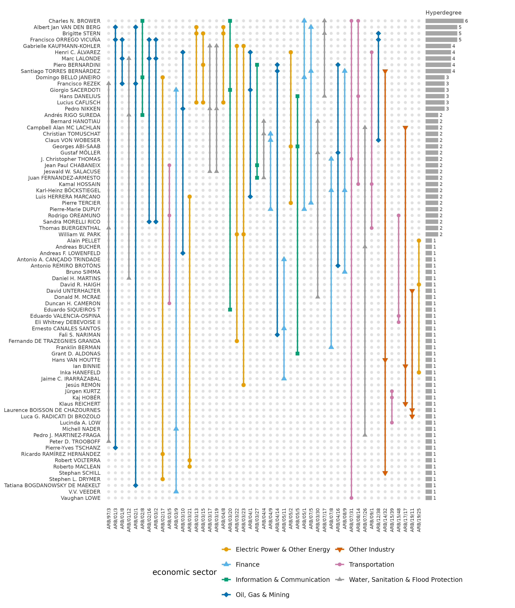
A tribunal that repeats a panel appears as a second column with dots in the same three rows. The 3 repeated panels are the pairs ARB/03/13 and ARB/04/8, ARB/02/16 and ARB/03/2, ARB/03/17 and ARB/03/19. All were constituted in 2003 and 2004, and the two tribunals of 2 of the pairs on the same day. The 9 arbitrators with four or more tribunals hold the top rows, and 66% of their seats are on tribunals constituted before 2006.
The hyperdegree of an arbitrator is the number of tribunals on which the arbitrator sat, and the degree in the clique expansion is the number of distinct colleagues.
hg_get(argentina_all, what = "nodes", sort_by = "degree", top = 5)
#> node degree
#> 1 Charles N. BROWER 6
#> 2 Albert Jan VAN DEN BERG 5
#> 3 Brigitte STERN 5
#> 4 Francisco ORREGO VICUÑA 5
#> 5 Gabrielle KAUFMANN-KOHLER 4
tribunal_counts <- hg_measures(argentina_all, what = "distribution",
measure = "hyperdegree")
colleague_counts <- hg_measures(argentina_all, what = "distribution",
measure = "n_neighbors")The figures plot the complementary cumulative distributions of the number of tribunals and of the number of colleagues of an arbitrator.
plot(tribunal_counts)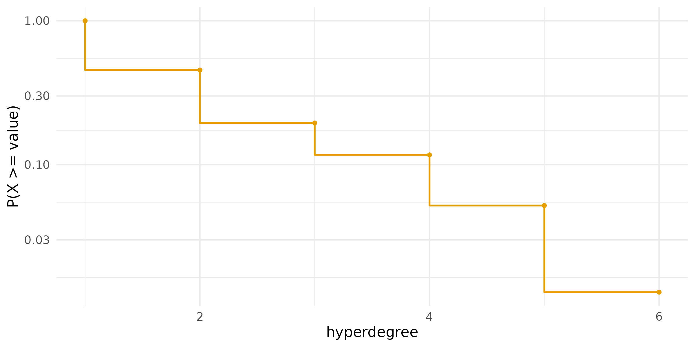
plot(colleague_counts)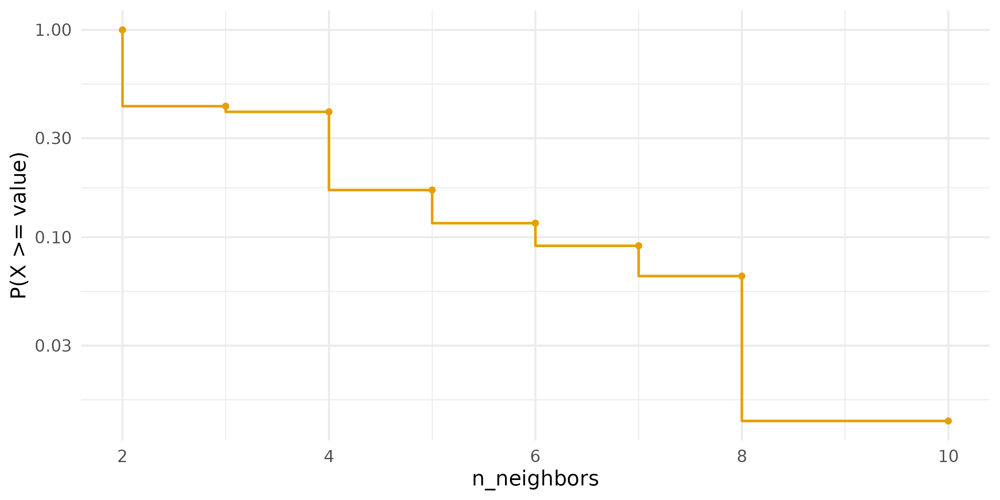
Of the arbitrators, 55% sat on a single tribunal in these cases, and Charles N. BROWER sat on 6. The largest number of colleagues is 10. The ten arbitrators with the most tribunals, 13% of the arbitrators, hold 31% of the seats in the claims against Argentina; in the cases against other states the ten busiest arbitrators hold 20%.
Degree assortativity asks whether arbitrators with many tribunals sit with other arbitrators with many tribunals. From each tribunal a pair of arbitrators is chosen at random, and the coefficient is the rank correlation of their numbers of tribunals over all tribunals, a generalised Spearman coefficient.
hg_assortativity(argentina_all)
#> type scale assortativity n_edges
#> 1 uniform rank 0.2509363 47
hg_assortativity(others_all)
#> type scale assortativity n_edges
#> 1 uniform rank 0.1467613 695The coefficient is 0.25 for the claims against Argentina and 0.15 for the cases against other states. In both, the busier arbitrators tend to share tribunals with each other, and the tendency is stronger in the claims against Argentina.
Repeated panels
A repeated collaboration is a pair or a set of three arbitrators who
sit together on more than one tribunal. The statistic
repeated_pairs is the number of pairs counted with their
multiplicity minus the number of distinct pairs, and
repeated_edges is the number of tribunals whose set of
arbitrators sat before. Whether these counts exceed what the numbers of
tribunals of the arbitrators imply is tested against a null model. The
swap null keeps the number of tribunals of every arbitrator and the size
of every tribunal exactly and randomises the memberships by checkerboard
swaps. The assignment null is a looser alternative, in which the
arbitrators are taken in decreasing order of hyperdegree and assigned at
random to tribunals with a free seat. Both are reported, each with 999
draws.
repeats_swap <- hg_null_test(argentina_all,
statistic = c("repeated_pairs", "repeated_edges"),
method = "swap", n = 999, seed = 1)
repeats_swap
#> statistic observed null_mean null_lo null_hi z p_value n
#> 1 repeated_pairs 14 2.09109109 0 7 6.276624 0.001 999
#> 2 repeated_edges 3 0.07807808 0 1 8.804718 0.003 999
#> method
#> 1 swap
#> 2 swap
repeats_assignment <- hg_null_test(argentina_all,
statistic = c("repeated_pairs", "repeated_edges"),
method = "assignment", n = 999, seed = 1)
repeats_assignment
#> statistic observed null_mean null_lo null_hi z p_value n
#> 1 repeated_pairs 14 3.80080080 1 8 5.800674 0.001 999
#> 2 repeated_edges 3 0.03503504 0 1 16.117402 0.001 999
#> method
#> 1 assignment
#> 2 assignmentThe same test on all ICSID tribunals, and on the tribunals of the cases against other states, tells whether the claims against Argentina differ from the system.
repeats_icsid <- hg_null_test(icsid_all,
statistic = c("repeated_pairs", "repeated_edges"),
method = "swap", n = 999, seed = 1)
repeats_icsid
#> statistic observed null_mean null_lo null_hi z p_value n method
#> 1 repeated_pairs 357 328.77978 305 354 2.086455 0.001 999 swap
#> 2 repeated_edges 20 12.51451 7 20 1.865566 0.034 999 swap
repeats_other <- hg_null_test(others_all,
statistic = c("repeated_pairs", "repeated_edges"),
method = "swap", n = 999, seed = 1)
repeats_other
#> statistic observed null_mean null_lo null_hi z p_value n method
#> 1 repeated_pairs 330 299.41141 267 330 1.412722 0.130 999 swap
#> 2 repeated_edges 17 11.28328 6 17 1.439547 0.105 999 swapAgainst the swap null, the claims against Argentina contain 14 repeated pairs (null range 0 to 7, z = 6.3) and 3 repeated panels (null range 0 to 1, z = 8.8, p = 0.003). The assignment null gives z = 5.8 for the pairs and z = 16.1 for the panels. Across all 742 ICSID tribunals, the excess is modest: z = 2.1 for the 357 repeated pairs and z = 1.9 for the 20 repeated panels (p = 0.03). Without the claims against Argentina it disappears. In the cases against other states, neither the 330 repeated pairs (p = 0.13) nor the 17 repeated panels (p = 0.10) differ from the swap null. Under the null that keeps every margin exactly, the repetition of arbitrators and panels found in ICSID as a whole is the repetition in the claims against Argentina.
Motifs
In a hypergraph whose hyperedges all have three nodes, four nodes can hold up to four hyperedges. The motif Y has two of them, two tribunals that share two arbitrators; T has three and O has all four. A motif count is compared with its distribution under a configuration model that keeps the hyperdegree of every node and the size of every hyperedge. The census of the aggregate uses 1,000 draws.
motifs <- hg_motifs(argentina_all, n = 1000, seed = 1)
motifs
#> motif count expected null_sd z p_value delta normalized_delta
#> 1 Y 5 1.789 1.304791 2.460931 0.03196803 0.2976179 1
#> 2 T 0 0.000 0.000000 NA 1.00000000 0.0000000 0
#> 3 O 0 0.000 0.000000 NA 1.00000000 0.0000000 0
#> n_null method
#> 1 1000 configuration_mcmc
#> 2 1000 configuration_mcmc
#> 3 1000 configuration_mcmc
plot(motifs)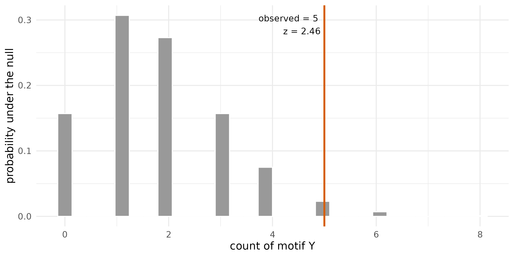
The aggregate contains 5 motifs Y against a null mean of 1.8 (z = 2.5, p = 0.032), and the motifs T and O do not occur. The aggregate joins tribunals that never sat at the same time, so the census is repeated on the snapshot of the first of January of each year, which holds only the tribunals active together on that day.
years <- seq(as.Date("2003-01-01"), as.Date("2015-01-01"), by = "year")
yearly_motifs <- hg_motifs(tribunals, n = 300, seed = 1, at = years)
subset(yearly_motifs, motif == "Y",
select = c(time, count, expected, z, p_value))
#> time count expected z p_value
#> 1 2003-01-01 0 0.5100000 -0.8879306 0.57142857
#> 4 2004-01-01 1 0.4800000 0.8477259 0.42192691
#> 7 2005-01-01 3 0.9833333 1.9086503 0.08970100
#> 10 2006-01-01 2 0.6700000 1.7250435 0.13289037
#> 13 2007-01-01 3 0.8266667 2.4985428 0.05980066
#> 16 2008-01-01 2 0.5900000 2.0036146 0.10963455
#> 19 2009-01-01 1 0.6033333 0.5368263 1.00000000
#> 22 2010-01-01 2 0.6033333 1.8901700 0.12292359
#> 25 2011-01-01 1 0.4533333 0.8854651 0.39202658
#> 28 2012-01-01 1 0.3866667 1.0168384 0.33222591
#> 31 2013-01-01 0 0.1766667 -0.4529584 1.00000000
#> 34 2014-01-01 0 0.1666667 -0.4368520 1.00000000
#> 37 2015-01-01 0 0.1000000 -0.3216338 1.00000000No snapshot holds more than 3 motifs Y, and the smallest p-value of a snapshot is 0.06. The counts on a single day are too small for the test to separate them from the null, and the excess is established only for the aggregate.
How the docket changed
Growth counts the active tribunals and arbitrators at each time, and
the columns ending in _cumulative count every tribunal
begun by that time. With components = TRUE, the number of
connected components of the active hypergraph, the share of its
arbitrators in the largest component and the diameter of that component
are added. The grid is the first of January of each year from 2002 to
2022.
grid <- seq(as.Date("2002-01-01"), as.Date("2022-01-01"), by = "year")
docket <- hg_growth(tribunals, components = TRUE, at = grid)
tail(docket, 3)
#> time n_nodes n_edges n_edges_distinct n_memberships n_nodes_cumulative
#> 19 8066 15 5 5 15 71
#> 20 8432 21 7 7 21 77
#> 21 8797 18 6 6 18 77
#> n_edges_cumulative n_edges_distinct_cumulative n_components
#> 19 45 42 5
#> 20 47 44 7
#> 21 47 44 6
#> largest_component diameter
#> 19 0.2000000 1
#> 20 0.1428571 1
#> 21 0.1666667 1
plot(docket,
columns = c("n_nodes", "n_edges", "n_nodes_cumulative",
"n_edges_cumulative"),
facets = FALSE)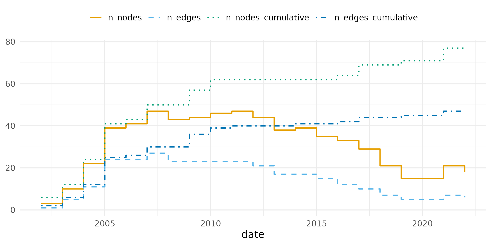
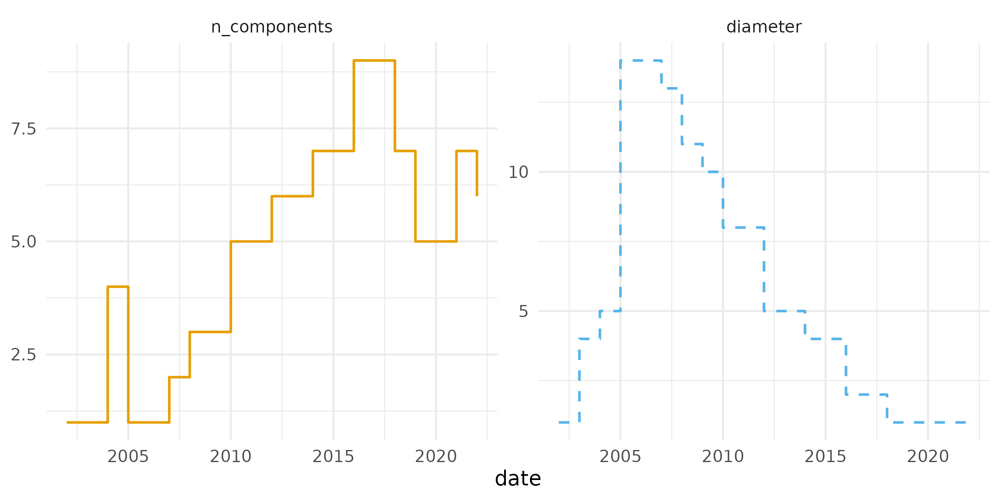
On the first of January of 2005 and 2006, every active tribunal belonged to one connected component, with up to 41 arbitrators linked through shared seats. The two most distant arbitrators of that component were 14 steps apart in 2005, each step a tribunal on which two arbitrators sat together. The component broke apart afterwards, and in 2022 the 6 active tribunals formed 6 separate components. The number of active arbitrators per active tribunal fell to 1.62 in 2005, when the active tribunals shared many of their arbitrators, and rose to 3.00 in 2022, when no two active tribunals shared one.
The neighbourhood of a tribunal is the set of arbitrators who share a tribunal with one of its members.
neighbourhood <- hg_edges(tribunals, what = "summary", measure = "n_neighbors",
at = grid)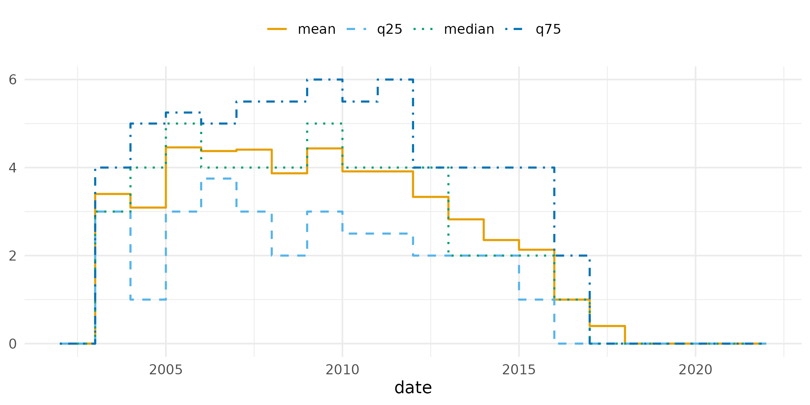
The mean neighbourhood of an active tribunal peaks at 4.5 arbitrators in 2005.
The storyline plots the eight arbitrators with the most tribunals as lines across their tribunals, in the order the tribunals were constituted. A line runs from an arbitrator’s first tribunal to the last, and a grey bar at a tribunal gathers the lines of its members among the eight. Two neighbouring lines sit closer the more tribunals the two arbitrators shared, and a line is wider the more tribunals the arbitrator sat on.
plot(tribunals, type = "storyline", spacing = "strength", width_by = "degree")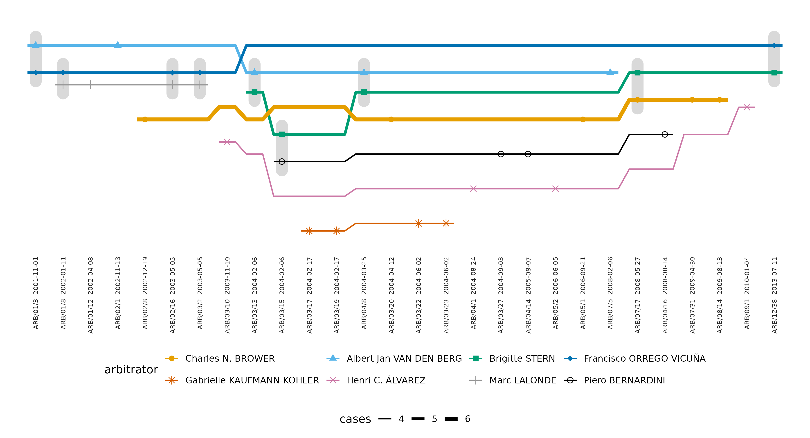
Francisco ORREGO VICUÑA and Marc LALONDE shared 3 tribunals, the most of any two of the eight, and their lines run closest. Gabrielle KAUFMANN-KOHLER and Henri C. ÁLVAREZ shared no tribunal with any of the other seven. The longest line is Francisco ORREGO VICUÑA’s, from 2001 to 2013.
Which tribunals held the docket together
The s-betweenness of a tribunal is its betweenness centrality in the s-line graph, in which two tribunals are adjacent when they share at least s arbitrators. With s = 1, a tribunal of high betweenness lies on many of the shortest chains of shared arbitrators between other tribunals. Computed on the snapshot of each year, it shows which tribunal bridged the docket at each time.
bridges <- hg_edge_centrality(tribunals, s = 1, measure = "betweenness",
at = grid, top = 1)
bridges
#> time edge s measure value
#> 1 2002-01-01 ARB/01/3 1 betweenness 0.00000000
#> 2 2003-01-01 ARB/01/8 1 betweenness 0.66666667
#> 3 2004-01-01 ARB/01/12 1 betweenness 0.22222222
#> 4 2005-01-01 ARB/02/8 1 betweenness 0.54940711
#> 5 2006-01-01 ARB/02/8 1 betweenness 0.54940711
#> 6 2007-01-01 ARB/05/1 1 betweenness 0.49692308
#> 7 2008-01-01 ARB/05/1 1 betweenness 0.46320346
#> 8 2009-01-01 ARB/04/1 1 betweenness 0.47186147
#> 9 2010-01-01 ARB/07/17 1 betweenness 0.15151515
#> 10 2011-01-01 ARB/07/17 1 betweenness 0.12987013
#> 11 2012-01-01 ARB/03/10 1 betweenness 0.06315789
#> 12 2013-01-01 ARB/03/10 1 betweenness 0.07500000
#> 13 2014-01-01 ARB/03/10 1 betweenness 0.02500000
#> 14 2015-01-01 ARB/03/10 1 betweenness 0.03296703
#> 15 2016-01-01 ARB/02/17 1 betweenness 0.00000000
#> 16 2017-01-01 ARB/02/17 1 betweenness 0.00000000
#> 17 2018-01-01 ARB/02/17 1 betweenness 0.00000000
#> 18 2019-01-01 ARB/02/17 1 betweenness 0.00000000
#> 19 2020-01-01 ARB/02/17 1 betweenness 0.00000000
#> 20 2021-01-01 ARB/02/17 1 betweenness 0.00000000
#> 21 2022-01-01 ARB/02/17 1 betweenness 0.00000000The bridge changes over time: 7 tribunals hold the highest betweenness in at least one year. From 2016 on, no active tribunal lies between two others, because the active tribunals no longer share arbitrators.
On 1 June 2006, near the peak of the docket, the backbone is the ten tribunals of highest betweenness in the snapshot of that day.
peak <- hg_snapshot(tribunals, at = as.Date("2006-06-01"))
backbone_cases <- hg_edge_centrality(peak, s = 1, measure = "betweenness",
top = 10)
backbone <- hg_subset(peak, edges = backbone_cases)
plot(backbone, color_by = "economic_sector", legend_title = "economic sector")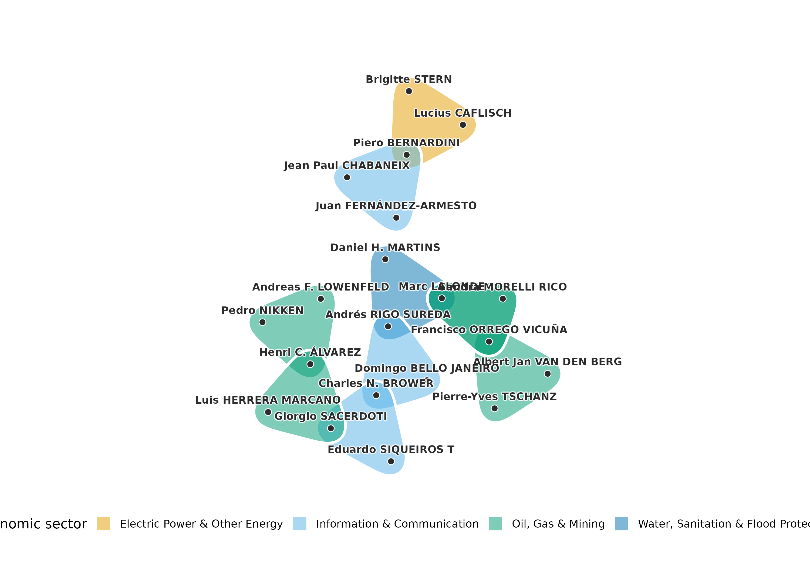
On that day 25 tribunals were active. The ten tribunals of the backbone span 4 economic sectors and are joined through a few arbitrators; Francisco ORREGO VICUÑA sits on 3 of them.
The aggregate hypergraph gives a different backbone. Closeness computed on all tribunals at once ranks tribunals as close to each other whether or not they were ever active together.
aggregate_cases <- hg_edge_centrality(argentina_all, s = 1,
measure = "closeness", top = 10)
aggregate_cases
#> edge s measure value
#> 1 ARB/07/17 1 closeness 0.3864734
#> 2 ARB/07/5 1 closeness 0.3700278
#> 3 ARB/03/13 1 closeness 0.3585836
#> 4 ARB/04/8 1 closeness 0.3585836
#> 5 ARB/03/15 1 closeness 0.3478261
#> 6 ARB/03/20 1 closeness 0.3478261
#> 7 ARB/08/14 1 closeness 0.3478261
#> 8 ARB/12/38 1 closeness 0.3443823
#> 9 ARB/05/2 1 closeness 0.3376952
#> 10 ARB/02/8 1 closeness 0.3344482Of the 45 pairs among these ten tribunals, 14 were never active at the same time. A static centrality on the aggregate treats the docket as if all of it had sat at once, which is the reason centrality is computed here on snapshots.
Betweenness on all tribunals at once ranks them as follows.
aggregate_bridges <- hg_edge_centrality(argentina_all, s = 1,
measure = "betweenness", top = 10)
aggregate_bridges
#> edge s measure value
#> 1 ARB/07/5 1 betweenness 0.15209838
#> 2 ARB/03/10 1 betweenness 0.13913043
#> 3 ARB/07/17 1 betweenness 0.12971398
#> 4 ARB/05/2 1 betweenness 0.11784909
#> 5 ARB/03/15 1 betweenness 0.10109731
#> 6 ARB/03/27 1 betweenness 0.08490683
#> 7 ARB/04/1 1 betweenness 0.07816463
#> 8 ARB/03/20 1 betweenness 0.07620006
#> 9 ARB/04/14 1 betweenness 0.07171613
#> 10 ARB/12/38 1 betweenness 0.069577876 of the ten tribunals with the highest betweenness are also among the ten with the highest closeness. The figure plots the ten with the highest betweenness, coloured by economic sector.
central_tribunals <- hg_subset(argentina_all, edges = aggregate_bridges)
plot(central_tribunals, color_by = "economic_sector",
legend_title = "economic sector")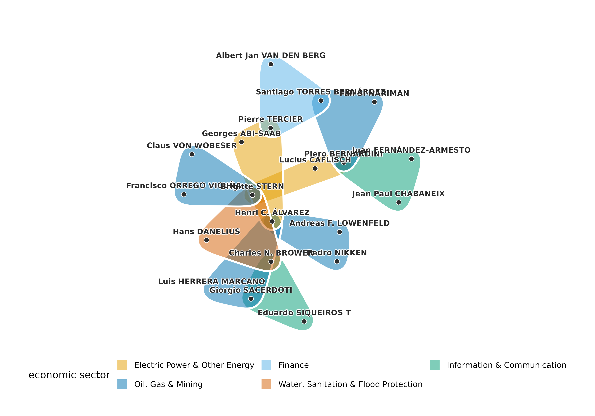
The central tribunals are joined through a few arbitrators who sit on several of them; Brigitte STERN sits on 3 of the ten.
Communities of arbitrators
Hypergraph modularity measures the quality of a partition of the nodes into communities, counting a hyperedge for a community when a majority of its nodes belong to it. Iteratively reweighted modularity maximisation (IRMM) finds a partition of high modularity, and Infomap partitions the association graph by minimising the description length of a random walk on it. Both are run from 20 seeds, and the partition reported is the medoid, the run with the largest summed adjusted mutual information with the other runs.
irmm <- hg_communities(argentina_all, type = "irmm", seeds = 1:20,
n_runs = 20, max_iter = 300)
hg_modularity(argentina_all, irmm)
#> type modularity edge_contribution degree_tax n_communities n_edges
#> 1 linear 0.6146005 0.893617 0.2790165 11 47
#> total_weight
#> 1 47
infomap <- hg_communities(argentina_all, seeds = 1:20, n_runs = 20)
hg_modularity(argentina_all, infomap)
#> type modularity edge_contribution degree_tax n_communities n_edges
#> 1 linear 0.6401226 0.8510638 0.2109413 14 47
#> total_weight
#> 1 47
hg_agreement(irmm, infomap, method = c("ari", "ami"))
#> n agreement aligned ari ami
#> 1 77 0.3116883 58 0.6141959 0.7615006The IRMM medoid has 11 communities of between 3 and 14 arbitrators and a modularity of 0.615, and its runs agree with a median adjusted mutual information of 0.92. The Infomap medoid has 14 communities and a modularity of 0.640, and its runs agree with a median of 1.00. The two medoids agree with an adjusted Rand index of 0.61 and an adjusted mutual information of 0.76. The figure plots the backbone of 1 June 2006 with each arbitrator coloured and shaped by its IRMM community.
plot(backbone, node_groups = irmm)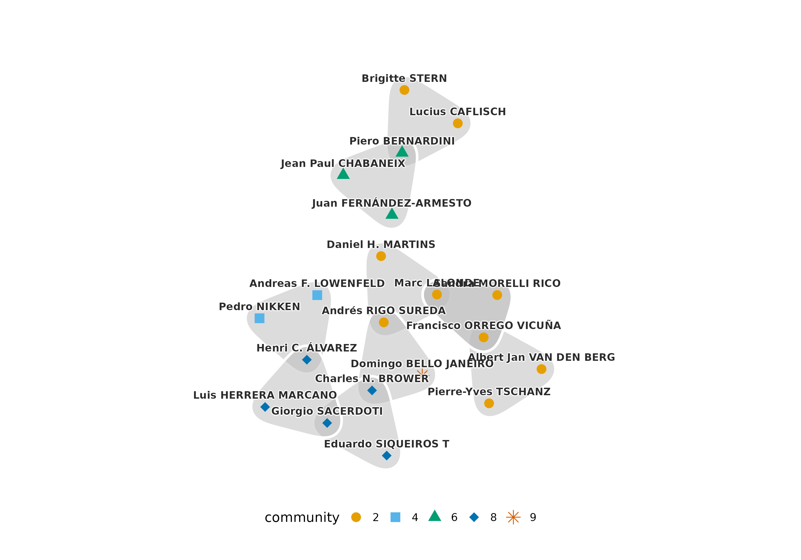
The contribution of each IRMM community shows where the modularity comes from.
hg_modularity(argentina_all, irmm, what = "communities")
#> community n_nodes volume edge_contribution degree_tax modularity
#> 1 2 13 35 0.21985816 0.1079383324 0.11191982
#> 2 8 14 30 0.17730496 0.0809069281 0.09639804
#> 3 6 11 19 0.12056738 0.0338692525 0.08669812
#> 4 4 7 14 0.09929078 0.0187384441 0.08055234
#> 5 7 9 14 0.09219858 0.0187384441 0.07346014
#> 6 9 6 11 0.05673759 0.0116976150 0.04503997
#> 7 3 5 6 0.04255319 0.0035444940 0.03900870
#> 8 1 3 3 0.02127660 0.0008957553 0.02038084
#> 9 10 3 3 0.02127660 0.0008957553 0.02038084
#> 10 11 3 3 0.02127660 0.0008957553 0.02038084
#> 11 5 3 3 0.02127660 0.0008957553 0.02038084The community of 13 arbitrators contributes most, 0.112 of the 0.615. 4 communities hold three arbitrators with a volume of three, so each is a single tribunal whose arbitrators sat on no other tribunal in these claims.
Argentina and the other cases
| claims against Argentina | cases against other states | |
|---|---|---|
| tribunals | 47 | 695 |
| arbitrators | 77 | 420 |
| share of seats held by the ten busiest arbitrators | 31% | 20% |
| share of tribunals that repeat a panel | 6% | 2% |
| degree assortativity | 0.25 | 0.15 |
| repeated panels, z against the swap null | 8.8 | 1.4 |